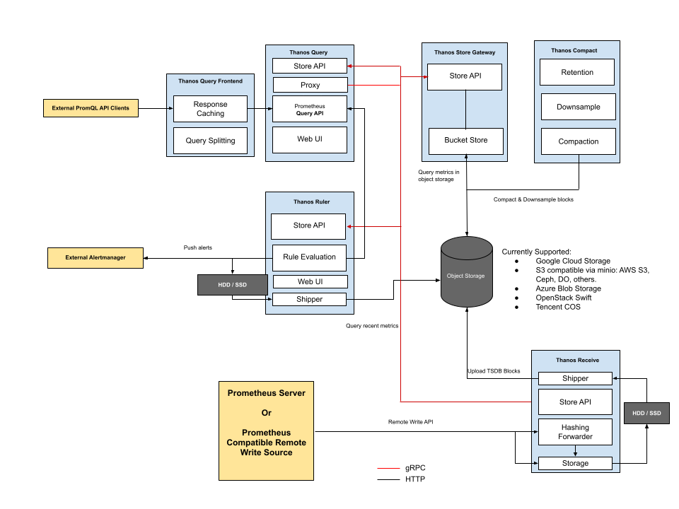

[!WARNING] This is a github note
POC prometheus HA architect with thanos¶
diagram¶
-
without remote write

-
with remotewrite

go-through-¶
prometheus¶
- create
ekscluster1for observer,ekscluster2for observee (eks-public-access-cluster) - addons
- aws lbc
- ebs csi
- externaldns-for-route53
- setup host zone (git/git-mkdocs/EKS/infra/network/externaldns-for-route53)
- create ns record on up stream dns register (git/git-mkdocs/CLI/awscli/route53-cmd)
- install addon to eks (git/git-mkdocs/EKS/infra/network/externaldns-for-route53)
-
export values for modify later
-
get sample yaml to foler
POC
-
create cert for tls communitication (skip)
echo ${DOMAIN_NAME} kubectl create ns monitoring THANOS_DOMAIN=thanos-gateway.${DOMAIN_NAME} envsubst >thanos-gateway-tls.yaml <<-EOF apiVersion: cert-manager.io/v1 kind: Certificate metadata: name: ${THANOS_DOMAIN} namespace: monitoring spec: secretName: thanos-gateway-tls dnsNames: - ${THANOS_DOMAIN} issuerRef: name: letsencrypt-prod kind: ClusterIssuer EOF kubectl apply -f thanos-gateway-tls.yaml -
create certificate for TLS access (git/git-mkdocs/CLI/awscli/acm-cmd)
observer cluster¶
- on observer (ekscluster1)
-
create s3 config file for thanos sider car
-
code block
refer-s3-config
refer-s3-configecho ${DOMAIN_NAME} echo ${CLUSTER_NAME} echo ${STORAGECLASS_NAME:=gp3} echo ${THANOS_BUCKET_NAME} echo ${AWS_DEFAULT_REGION} echo ${CERTIFICATE_ARN} echo ${NAMESPACE} kubectl create ns ${NAMESPACE} envsubst >s3-config/thanos-s3-config-${CLUSTER_NAME}.yaml <<-EOF type: S3 prefix: "${CLUSTER_NAME}" config: bucket: "${THANOS_BUCKET_NAME}" endpoint: "s3.${AWS_DEFAULT_REGION}.amazonaws.com" region: "${AWS_DEFAULT_REGION}" sts_endpoint: "https://sts.amazonaws.com" EOF kubectl -n ${NAMESPACE} create secret generic thanos-s3-config-${CLUSTER_NAME} --from-file=thanos-s3-config-${CLUSTER_NAME}=s3-config/thanos-s3-config-${CLUSTER_NAME}.yaml
^refer-s3-config -
deploy prometheus with thanos and grafana
# enable grafana and typical prometheus envsubst >prometheus/values-${CLUSTER_NAME}-1.yaml <<-EOF grafana: enabled: true deploymentStrategy: type: Recreate service: type: NodePort ingress: enabled: true annotations: kubernetes.io/ingress.class: alb alb.ingress.kubernetes.io/scheme: internet-facing hosts: - grafana-${DOMAIN_NAME%%.*}.${DOMAIN_NAME} prometheus: prometheusSpec: replicas: 2 retention: 4h retentionSize: "20GB" ruleSelectorNilUsesHelmValues: false serviceMonitorSelectorNilUsesHelmValues: false podMonitorSelectorNilUsesHelmValues: false topologySpreadConstraints: - maxSkew: 1 topologyKey: topology.kubernetes.io/zone whenUnsatisfiable: DoNotSchedule labelSelector: matchLabels: app: prometheus # additionalScrapeConfigsSecret: # enabled: true # name: additional-scrape-configs # key: avalanche-additional.yaml storageSpec: volumeClaimTemplate: spec: storageClassName: ${STORAGECLASS_NAME} accessModes: ["ReadWriteOnce"] resources: requests: storage: 50Gi selector: {} externalLabels: cluster: "${CLUSTER_NAME}" cluster_name: "${CLUSTER_NAME}" origin_prometheus: "${CLUSTER_NAME}" EOF # enable prometheus with thanos envsubst >prometheus/values-${CLUSTER_NAME}-1-1.yaml <<-EOF prometheus: thanosService: enabled: true thanosServiceMonitor: enabled: true thanosServiceExternal: enabled: true type: LoadBalancer prometheusSpec: thanos: objectStorageConfig: existingSecret: name: thanos-s3-config-${CLUSTER_NAME} key: thanos-s3-config-${CLUSTER_NAME} EOF helm upgrade -i -f prometheus/values-${CLUSTER_NAME}-1.yaml -f prometheus/values-${CLUSTER_NAME}-1-1.yaml ${DEPLOY_NAME} prometheus-community/kube-prometheus-stack --namespace monitoring # helm uninstall ${DEPLOY_NAME} --namespace monitoring -
create irsa in monitoring namespace for thanos (git/git-mkdocs/CLI/linux/eksctl)
-
code block
refer-irsa-prometheus
refer-irsa-prometheuscreate-iamserviceaccount ${SA_NAME} ${CLUSTER_NAME} monitoring 0 echo ${S3_ADMIN_ROLE_ARN} kubectl annotate sa prom-operator-${CLUSTER_NAME}-prometheus -n monitoring eks.amazonaws.com/role-arn=${S3_ADMIN_ROLE_ARN} --overwrite
^refer-irsa-prometheus -
rollout deployment
observee cluster¶
- on observee (ekscluster2)
refer code block refer-s3-config
-
deploy prometheus with remote write and thanos sider car
# enable grafana and typical prometheus envsubst >prometheus/values-${CLUSTER_NAME}-1.yaml <<-EOF grafana: enabled: false prometheus: prometheusSpec: replicas: 2 retention: 4h retentionSize: "20GB" ruleSelectorNilUsesHelmValues: false serviceMonitorSelectorNilUsesHelmValues: false podMonitorSelectorNilUsesHelmValues: false topologySpreadConstraints: - maxSkew: 1 topologyKey: topology.kubernetes.io/zone whenUnsatisfiable: DoNotSchedule labelSelector: matchLabels: app: prometheus # additionalScrapeConfigsSecret: # enabled: true # name: additional-scrape-configs # key: avalanche-additional.yaml storageSpec: volumeClaimTemplate: spec: storageClassName: ${STORAGECLASS_NAME} accessModes: ["ReadWriteOnce"] resources: requests: storage: 50Gi selector: {} remoteWrite: - url: http://k8s-thanos-thanosre-xxx.elb.us-east-2.amazonaws.com:19291/api/v1/receive remoteWriteDashboards: true externalLabels: cluster: "${CLUSTER_NAME}" cluster_name: "${CLUSTER_NAME}" origin_prometheus: "${CLUSTER_NAME}" EOF # enable prometheus with thanos envsubst >prometheus/values-${CLUSTER_NAME}-1-1.yaml <<-EOF prometheus: thanosService: enabled: true thanosServiceMonitor: enabled: true thanosServiceExternal: enabled: true type: LoadBalancer prometheusSpec: thanos: objectStorageConfig: existingSecret: name: thanos-s3-config-${CLUSTER_NAME} key: thanos-s3-config-${CLUSTER_NAME} EOF helm upgrade -i -f prometheus/values-${CLUSTER_NAME}-1.yaml -f prometheus/values-${CLUSTER_NAME}-1-1.yaml ${DEPLOY_NAME} prometheus-community/kube-prometheus-stack --namespace monitoring # helm uninstall ${DEPLOY_NAME} --namespace monitoring -
using remote write, WAL log will be transfer to receive pod, you could query real time data from receive.
-
create irsa in monitoring namespace for thanos (git/git-mkdocs/CLI/linux/eksctl)
refer code block refer-irsa-prometheus
- rollout
thanos¶
store¶
- reuse 2 cluster s3 config file for thanos store on observer
- create thanos store for history data query
- download store.tar.gz
- download store.tar.gz
- create role for sa (git/git-mkdocs/CLI/linux/eksctl) and annotate to existed sa
- rollout 2 stores (need to be deleted and apply again)
query and query frontend¶
- download query.tar.gz
- modify query frontend ingress yaml
- improve query performance in query frontend
- modify query deployment yaml as need, add endpoint for sider car, receive, store, etc.
- deploy
receive¶
- create receive for ekscluster2
- use existed s3 config file in secret
- download receive.tar.gz
- deploy receive for ekscluster2 dedicate
-
create irsa in thanos namespace for receive (git/git-mkdocs/CLI/linux/eksctl)
-
rollout (delete and apply again)
- get receive svc
- add it to prometheus remote write in ekscluster2
- add it to query deployment yaml
grafana¶
query history metrics¶
- change default password
- add prometheus type data source
- go this dashboard
Kubernetes / Networking / Namespace (Pods)

- we have history data, but no latest 2 hour metrics
- go to query deployment to add thanos sidercar svc (
xxx-kub-thanos-external) to endpoint list with port10901 - query again from grafana, we will get full metrics
query by label cluster (prefer)¶
- modify existed variable to use cluster label
- no need to change dashboard definitions

- no need to change dashboard definitions
- we already label data in prometheus yaml and receive yaml with
cluster=my_cluster_name
query by externalLabels (alternative)¶
- custom dashboard

others¶
- 刷新 receive 数据时抖动严重
- 检查是否多副本 receive sts，且未做数据 replica
refer¶
prometheus tsdb block duration¶
- change block-duration, will cause prometheus statefulset cannot be start
samples¶
thanos config sample in this POC¶
grafana ingress with nginx sample¶
envsubst >${TMP}-1.yaml <<-EOF
grafana:
deploymentStrategy:
type: Recreate
ingress:
enabled: true
annotations:
kubernetes.io/ingress.class: nginx
cert-manager.io/cluster-issuer: "letsencrypt-prod"
hosts:
- grafana.${DOMAIN_NAME}
tls:
- secretName: grafana.${DOMAIN_NAME}
hosts:
- grafana.${DOMAIN_NAME}
persistence:
enabled: true
storageClassName: ${STORAGECLASS_NAME}
accessModes:
- ReadWriteOnce
size: 1Gi
prometheus:
prometheusSpec:
replicas: 2
retention: 12h
retentionSize: "10GB"
ruleSelectorNilUsesHelmValues: false
serviceMonitorSelectorNilUsesHelmValues: false
podMonitorSelectorNilUsesHelmValues: false
storageSpec:
volumeClaimTemplate:
spec:
storageClassName: ${STORAGECLASS_NAME}
accessModes: ["ReadWriteOnce"]
resources:
requests:
storage: 10Gi
EOF
thanos ingress with nginx sample¶
# enable prometheus with thanos
envsubst >${TMP##*.}-1-1.yaml <<-EOF
prometheus:
thanosService:
enabled: true
thanosServiceMonitor:
enabled: true
thanosServiceExternal:
enabled: true
type: LoadBalancer
thanosIngress:
enabled: true
ingressClassName: nginx
hosts:
- thanos-gateway.${DOMAIN_NAME}
paths: []
# - /
pathType: ImplementationSpecific
tls:
- secretName: thanos-gateway-tls
hosts:
- thanos-gateway.${DOMAIN_NAME}
prometheusSpec:
thanos:
objectStorageConfig:
existingSecret: {}
key: thanos.yaml
name: thanos-s3-config
EOF
other samples¶
- https://github.com/thanos-io/kube-thanos/tree/main/examples
- https://github.com/infracloudio/thanos-receiver-demo/tree/main/manifests
receive controller¶
- https://github.com/observatorium/thanos-receive-controller/tree/main
- receive controller does not included in this POC, it could based on header in remote write traffic to forward data to specific receive, refer (https://www.infracloud.io/blogs/multi-tenancy-monitoring-thanos-receiver/)
- In this POC we use dedicate receive. you could use receive route with receive controller project. refer (https://thanos.io/tip/proposals-accepted/202012-receive-split.md/)
- download receive-controller.tar.gz
- create receive controller in thanos namespace
- receive controller will generate
thanos-receive-generatedconfigmap with endpoint for receive route scenarios, include this file as hashring-config - create default s3 config
refer code block refer-s3-config
- create sa
links¶
- https://observability.thomasriley.co.uk/prometheus/using-thanos/high-availability/
- https://github.com/prometheus-operator/prometheus-operator/blob/main/Documentation/high-availability.md
- https://medium.com/@kakashiliu/deploy-prometheus-operator-with-thanos-60210eff172b
- https://particule.io/en/blog/thanos-monitoring/
- https://blog.csdn.net/kingu_crimson/article/details/123840099
- thanos
- prometheus
- prometheus
todo¶
- thanos receive router
Created: 2023-11-20